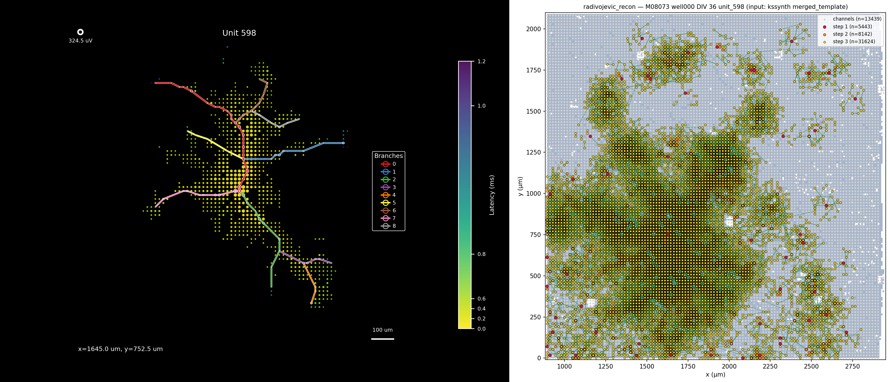
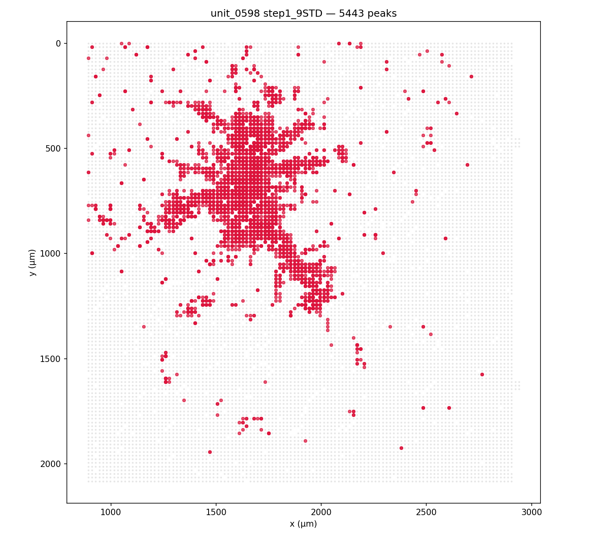
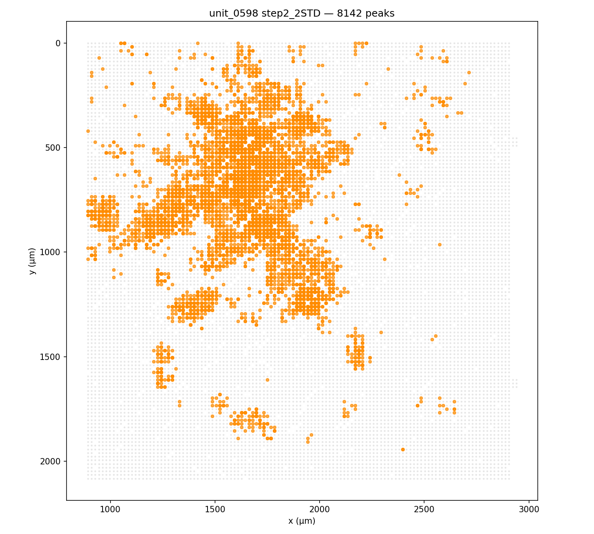
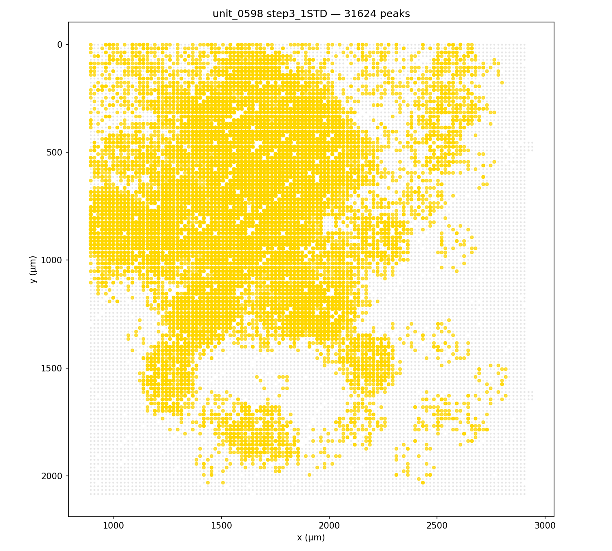
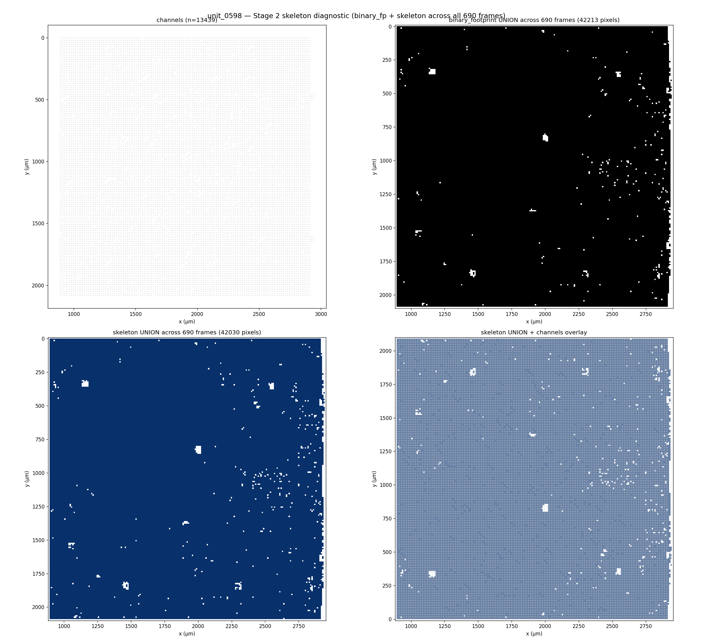
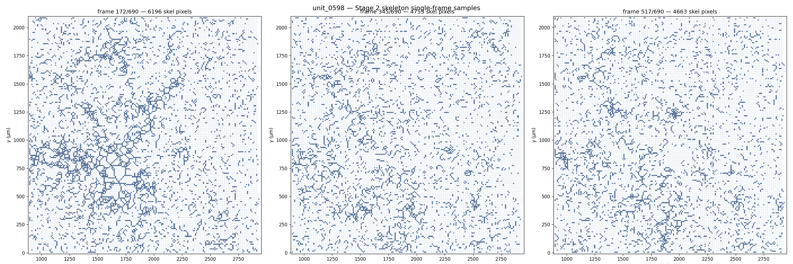
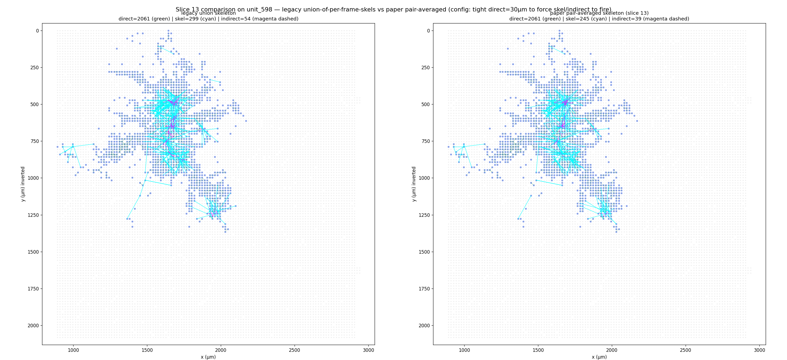

Real-data debugging on unit_0598 (the 9-branch reference unit) — first apples-to-apples vs the axon_velocity reference, then per-stage debug images that drove the algorithm-correctness fix slices (10–15).
First side-by-side: axon_velocity (reference) vs Radivojevic (clean-room)

comparison_unit_598.png — first HARD-gate comparison. LEFT: existing plot_recons output for unit_0598 (axon_velocity_gtrs, current production path). RIGHT: Radivojevic's own renderer (peaks colored by detection step + Stage-2 skeleton + Stage-3 links). Same merged_template input on both sides. Quantitative summary: 45,209 total Stage-1 peaks (5,443 @ 9-STD + 8,142 @ 2-STD + 31,624 @ 1-STD); 162.9 s wall on a single CPU. Reviewer asked: invert y-axis, isolate per-step channel selections, and check why Stage 2 skeleton is producing so much fill.
Per-step thresholding — Stage 1 debug isolation

Step 1 — 9-STD planar threshold. 5,443 peaks. Strict; only channels with very strong negative voltage derivatives. Plot is the channel selection (x, y on chip).

Step 2 — 2-STD confined. 8,142 additional peaks. Looser threshold but restricted to 50 µm × ±1 frame of step-1 peaks — recovers weaker axonal signal near already-detected peaks.

Step 3 — 1-STD confined (recursive). 31,624 further peaks via recursive expansion off step-2 peaks. Most permissive layer; recovers the long axonal tails. Each step's filter is paper-spec.
Stage 2 — skeletonization debug (a bug surfaced here)

skeleton_union.png — 4-panel: channels alone, binary footprint UNION across 690 frames, morphological skeleton UNION, and skeleton + channels overlay. Per-frame averages: 5,142 skeleton pixels out of 43,677 grid cells (~12%); 8,804 binary-footprint pixels (~20%). For a real axon at any single frame these should be tens-to-low-hundreds. The over-fill exposed a Stage-2 binarization bug — too-aggressive threshold + MAD-noise-on-dense-template under-estimating noise.

skeleton_single_frames.png — three sample timeframes (T/4, T/2, 3T/4 of 690 frames). Each panel should show a thin centerline along the active axon at that moment in propagation. The current artifact shows much denser fill, which matched the per-frame counts above. Drove the slice 13 architecture fix (on-demand pair-averaged skeletonization replacing the single-pass per-frame approach).
comparison_v4_yinverted_v2.png — v4 iteration: y-axis inverted (MEA convention, top of chip = low y), peaks scaled consistently, channels-only panel added for direct overlap inspection. The cleaner image is what we'll use to assess differential checks (DC-001).

slice13_compare.png — slice-13 fix: replace bulk per-frame skeletonization with on-demand pair-averaged skeletonization (only build a skeleton for the (frame_i, frame_j) pair currently being linked). Drops the per-frame fill rate, matches paper's two-stage routing logic more faithfully.
What these diagnostics revealed: 6 algorithm-correctness fix slices (10–15) added after first real-data smoke — fix max_distance_um_indirect to 400 µm; raw-recording inactive-period noise estimator; separate analysis frame interval from upsample factor; Stage 2 on-demand pair-averaged skeletonization; recursive Step 2/3 expansion (rider chain logic); integration smoke + diagnostic regression on unit_0598.